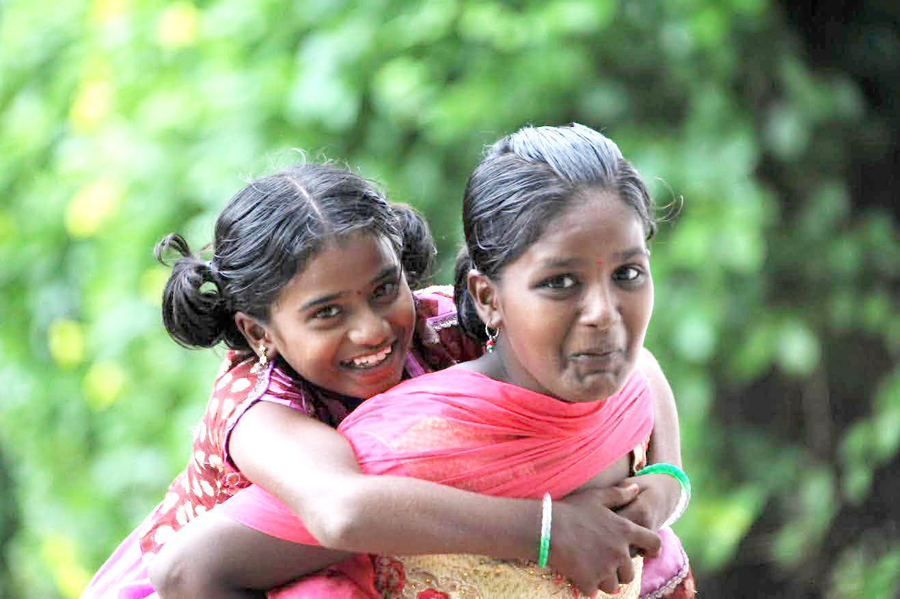

Gauthami remembers exactly what it felt like to not know how to read — the shame of it, the fear when teachers called on her, the way she used to hide at the back of the room. At Aarti, a patient tutor sat with her every evening for months until one day the words stopped looking like puzzles.
That moment of unlocking changed Gauthami's relationship with learning entirely. She became passionate about early childhood education, volunteering in Aarti's creche and later training formally as an early years educator.
She now runs a small early learning centre where many children arrive unable to read or write, drawing directly on Aarti's patient, child-centred approach.
“I know what it is to be the child at the back of the room. That knowledge is the most important thing I bring to my classroom.”
Gauthami's early learning centre has helped dozens of children make the transition into formal schooling — children who might otherwise have been left behind from the very start.
Gauthami is working with Aarti to develop a low-cost early literacy curriculum for community caregivers across the district.